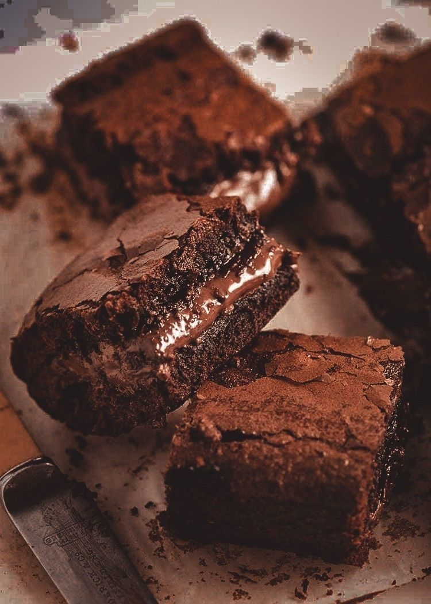

Brownies

Description
I regret making this recipe for my family because now every time they see me, they ask me to make it. This recipe contains just the right amount of sweetness. It is fudgy and delicious, and goes great with milk.
Sometimes i will place random pieces of chocolate in the brownie. Other times i will place them in the middle, as shown in the picture.
Ingredients
- 1 cup all-purpose or baking flour
- 3/4 cup unsalted butter
- one 4 ounce 70% cocoa dark chocolate bar
- 1 cup granulated sugar
- 4 large eggs
- 2 tsp pure vanilla extract
- 1 cup unsweetened natural cocoa powder
- 1 tsp salt
If the listed cocoa bar or cocoa powder isn't available to you, you can switch it out to different ones. Although, i would suggest changing the measurements for the sugar to fit your needs.
Too much sugar can make the brownies a sickly sweet, so I would be careful.
Steps
- Chop the 4 ounce chocolate. set aside.
- Preheat the oven to 350ºF/177ºC. Grease or line with parchment paper a 9x13 inch pan. set aside.
- Either on the stove, in a sauce pan or in the microwave using a microwave-safe bowl, combine the butter and 2 ounces of the chopped chocolate.
During both methods, whisk after every 30 seconds until completely smooth.
- Whisk in the sugar until completely combined, then whisk in the eggs and vanilla.
- Add the cocoa powder, flour and salt. Fold all the ingredients together with a rubber spatula or wooden spoon.
- Add in the rest of the chopped chocolate then spread evenly into the previously prepared pan.
- Bake for 25-30 minutes, then test every 2 minutes with a toothpick, until you have moist crumbs.
If the toothpick comes out clean, you have over cooked the brownies.
- Allow to cool before cutting into squares. Cover and store leftovers at room temperature up to 1 week.